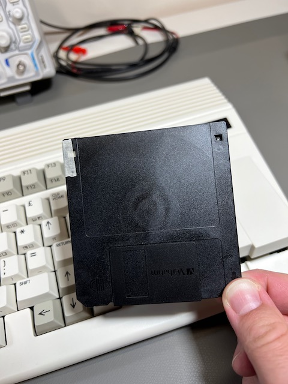

Using disks¶
We discussed using D81 disk images back in Disk images, including:
How to browse D81 disk images using the Freeze menu
How to mount a D81 disk image on drive 0 device 8 using the Freeze menu
How to get a directory listing with the
DIRcommandHow to load and run a program on the disk using the
LOADandRUNcommandsHow to use the
/shortcut to load a file within a directory listing
Disk-related improvements have been advancing quickly, and the latest ROM includes some useful features not mentioned in the printed manual.
Tip
Be sure that you have the latest ROM version before trying some of these features.
Listing a disk directory¶
The DIR command lists all of the files on a given disk. Without arguments, it lists the files on the disk in device 8:
DIR
If there are too many files than fit on a single screen, the list will scroll off and you will only see the bottom of the list. You can use the W argument to tell DIR to show the listing in multiple columns, and to wait for a keypress to show more pages. (Try this with the MEGA65.D81 disk.)
DIR W
Tip
For more on the DIR command, see the User’s Guide, page 106.
One disadvantage of the W flag is that you cannot use the / shortcut to load a program into memory. There is another way to view the complete directory listing and still use this shortcut: load the listing into BASIC memory. Commodore 64 users are familiar with LOAD "$",8 followed by LIST. To do this in a nicer way with MEGA65:
DLOAD "$$"
LIST
This still scrolls a long listing off the screen, but now you can use MEGA65 BASIC’s listing viewer to scroll up to previous lines. Use the F9 and F11 keys to traverse the listing, then cursor up to a program you want to load and use the / shortcut.
Caution
Loading the directory listing with DLOAD overwrites any BASIC program that resides in memory. The DIR command does not overwrite BASIC memory.
Using the SD card from BASIC¶
Recent improvements added the ability to manipulate disk images on the SD card without using the Freeze menu. In general, device U12 is considered the SD card.
To list all of the files on the SD card:
DIR U12
This does not yet support other features of the DIR command, such as filters or paging.
To mount a D81 disk image from the SD card directly from BASIC:
MOUNT "DISKNAME.D81"
By default, this mounts the disk image to device 8 (U8). To mount to device 9, add an argument:
MOUNT "DISKNAME.D81",U9
You can load a program file (.PRG) directly from the SD card, without having to create a D81 disk image. To do this, use the DLOAD command with unit U12, and be sure to include the .PRG filename extension:
DLOAD "FILENAME.PRG",U12
(Loading a PRG file does not work with the LOAD command.)
Using 3-1/2” floppy disks¶
Your MEGA65 includes a built-in 3-1/2” floppy disk drive for a complete retro experience.
If you don’t have 3-1/2” floppy disks lying around, you can still buy them new-old-stock at a reasonable price. I buy mine from FloppyDisk.com. You can also find refurbished floppy disks on eBay.
The MEGA65 floppy drive supports both double density (DD) and high density (HD) disks. However, as of this writing, the ability to use the larger capacity of HD disks is still in development. To use an HD disk with the MEGA65, you must apply non-transparent tape over the hole in the upper left (as shown). This convinces the floppy drive to treat the HD disk as if it were DD.

Using the physical floppy drive is similar to using a disk image. Open the Freeze menu (hold Restore, then release), then select a drive number (0). In the list of options that includes the D81 disk images, select - INTERNAL 3.5" -. Exit the Freeze menu (resume or reset).
Insert a floppy disk in the drive. If you have not used this disk with the MEGA65 before, it needs to be formatted. This erases all data on the disk! Use the HEADER command, providing a disk name in quotes, and a two digit disk ID number preceded by the letter I:
HEADER "WORK FILES",I01
Enter YES at the prompt to confirm. Formatting a disk for the first time takes a minute or so.
This command defaults to drive 0, unit 8. If you wish to format the disk mounted as drive 1, provide additional arguments to ensure it formats the correct disk.
Tip
See the HEADER command in the User’s Guide, page 135.
You can now use the floppy disk like you would a D81 disk image. Some things to try:
DIR
10 PRINT "HARD AT WORK"
20 GOTO 10
SAVE "HARDLYWORKING"
NEW
DIR
LOAD "HARDLYWORKING"
LIST
RUN
Using an external disk drive¶
Your MEGA65 has a 6-pin IEC serial port for connecting vintage Commodore disk drives.
Commodore disk drives use a serial protocol that allows multiple devices to be connected in a chain. Each device must have a unique device ID, such as 8 or 9. These old devices did not have a way to assign device IDs when connected in a chain. Instead, you use switches on the device itself to tell the drive its device ID.
By default, the MEGA65’s virtual drives use device IDs 8 and 9. You can use the Freeze menu to change these device IDs, such that you can use an external drive that is configured for those IDs. Open the Freeze menu, then press 8 to toggle the device ID for drive 0, or 9 to toggle the device ID for drive 1.
Any device that supports the disk serial protocol is expected to work, including new disk devices such as the Pi1541. Notice that some such devices like the SD2IEC need the C64 tape port to supply power to the device, and the MEGA65 has no such port.
Converting a D64 to a D81¶
You can find almost every game and application written for the Commodore 64 online in the form of disk images. However, these disk images are typically in the D64 format, which represents a 5-1/4” floppy disk. If you want to try running a C64 application on your Mega65 in its C64 mode, you must first convert the D64 image to a D81 image.
One way to do this is with the cbmconvert command line tool. This requires your PC (Windows, Mac, or Linux) and familiarity with the command line (Terminal).
cbmconvert is only available as source code, so you will need the ability to compile software on your PC. Linux users typically already have compilation tools installed. Mac users can install such tools with the command:
xcode-select --install
To build the cbmconvert tool:
Expand the archive:
tar xvfz cbmconvert-2.1.2.tar.gzChange to the expanded directory:
cd cbmconvert-2.1.2Build the tool:
make -f Makefile.unixWindows users with a POSIX-compliant build environment, use
make -f Makefile.win32
The cbmconvert tool is now present in the directory. You can put this directory on your command path, copy the cbmconvert file to somewhere on your path, or use the path to this directory when running the tool.
To use cbmconvert to convert a D64 file to a D81 file:
cbmconvert -v2 -d filename.d64 -D8 filename.d81
Copy the new D81 file to your microSD card, then return the card to your MEGA65. Open the Freeze menu, then select the D81 image for drive 8. At the MEGA65 BASIC prompt, enter GO 64 and type YES to confirm. The disk is now available on drive 8 from C64 mode.
Note
Not all D64 disks can be converted to D81, especially software with copy protection.
Note
C64 mode is known to not be compatible with all C64 software. If you are experiencing difficulty, try using the Freeze menu to switch from NTSC to PAL video mode or vice-versa (assuming you have a monitor that can show at least partial video with the other mode).
Tip
Remember that the C64 core supports D64 disk images directly without needing to convert them to D81 images. See The C64 core.